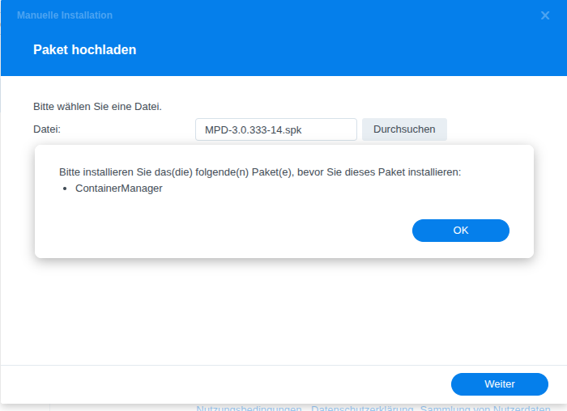
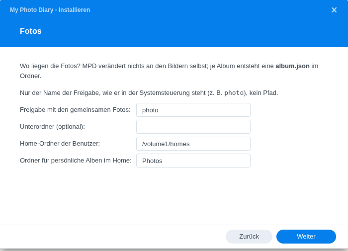
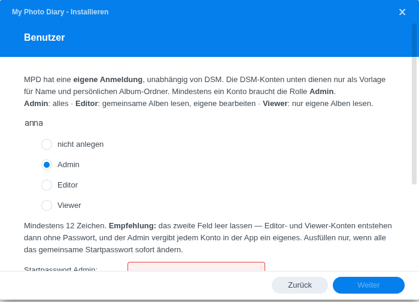
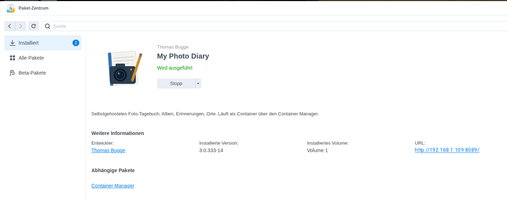
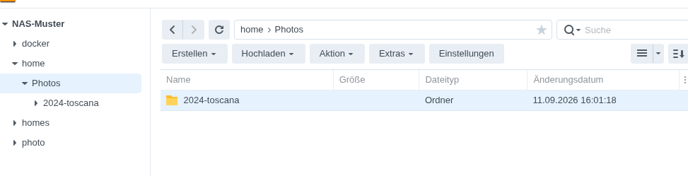

My Photo Diary — Installation auf SynologyInstalling on Synology
where your memories stay yours.
1. Was du brauchst1. What you need
My Photo Diary läuft als Paket direkt auf deiner Synology. Du brauchst keine
Kommandozeile und musst nichts von Hand einrichten, nur diese Dinge müssen da sein:
Was
Warum
Synology NAS mit DSM 7.2 oder neuer
Ältere Versionen kennen den Container Manager nicht.
Container Manager (aus dem Paketzentrum)
Darin läuft My Photo Diary. Bitte vorher installieren — DSM verlangt ihn, bevor es My Photo Diary annimmt. Er ist für die Plus-Modelle und die meisten Modelle ab 2019 verfügbar, nicht für die J-Serie.
Internet während der Installation
Einmalig werden rund 150 MB Grundbausteine geladen. Danach läuft alles ohne Internet; nur Landkarten kommen von außen.
Rund 1 GB freier Platz, 2 GB Arbeitsspeicher
Für das Programm und die Vorschaubilder.
Eine Freigabe mit Fotos, meist photo
Das ist eure gemeinsame Sammlung. Sie bleibt, wo sie ist; nichts wird kopiert oder importiert.
Benutzer-Home-Dienst aktiviert (Systemsteuerung → Benutzer und Gruppen → Erweitert)
Nur nötig, wenn jede Person auch einen eigenen, privaten Bereich haben soll. Dieser Bereich ist der Ordner Photos im Home-Ordner der Person; er muss existieren, sonst bleibt der Bereich aus. Anlegen kann ihn die Person selbst in der Datei-Station. My Photo Diary sieht davon ausschließlich die Foto-Ordner, nicht die übrigen Home-Verzeichnisse. Kommt ein Ordner oder Konto später dazu, einmal Stoppen und Starten im Paketzentrum.
Was My Photo Diary nie tut: deine Fotos verändern, verschieben oder in eine Datenbank importieren. Ein Album ist ein Ordner, und das bleibt so.
My Photo Diary runs as a package right on your Synology. No command line,
nothing to set up by hand; only these things need to be in place:
What
Why
Synology NAS with DSM 7.2 or newer
Older versions don't have Container Manager.
Container Manager (from Package Center)
My Photo Diary runs inside it. Please install it first — DSM requires it before it accepts My Photo Diary. It's available on the Plus models and most models from 2019 on, not on the J series.
Internet during installation
About 150 MB of building blocks are downloaded once. Afterwards everything runs offline; only maps come from outside.
About 1 GB free space, 2 GB RAM
For the program and the preview images.
A shared folder with photos, usually photo
That's your family collection. It stays where it is; nothing is copied or imported.
User home service enabled (Control Panel → User & Group → Advanced)
Only needed if each person should also get a private space of their own. That space is the folder Photos inside the person's home directory; it must exist, otherwise there is no personal space. The person can create it in File Station. My Photo Diary only ever sees the photo folders, not the rest of the home directories. If a folder or account is added later, stop and start the package once.
What My Photo Diary never does: alter, move or import your photos into a database. An album is a folder, and it stays that way.
2. Installation in fünf Minuten2. Installation in five minutes
Container Manager installieren. Paketzentrum → suchen → Container Manager → Installieren. Ohne ihn nimmt DSM My Photo Diary nicht an.
Paketdatei holen. Lade MPD-<Version>.spk auf deinen Computer.

Ohne Container Manager lehnt DSM das Paket ab.Without Container Manager, DSM refuses the package.
Installieren. Paketzentrum → Manuelle Installation → die Datei auswählen. DSM weist darauf hin, dass das Paket nicht von Synology stammt: Akzeptieren.
Seite „Fotos". Wähle die Freigabe mit euren Fotos, meist photo. Die anderen Felder kannst du so lassen: Persönliche Bereiche liegen dann im Home-Ordner jeder Person unter Photos.

Seite „Fotos": nur der Name der Freigabe, kein Pfad.Page "Photos": just the share name, not a path.
Seite „Erreichbarkeit". Der vorgeschlagene Port passt fast immer. Die öffentliche Adresse lässt du leer; sie ergibt sich später von selbst.
Seite „Benutzer". Du siehst die Konten deiner Synology. Gib jeder Person, die My Photo Diary nutzen soll, eine Rolle, und lege zwei Startpasswörter fest. Mindestens ein Konto muss Admin sein, in der Regel du selbst.

Seite „Benutzer": je Konto eine Rolle, dazu die Startpasswörter.Page "Users": one role per account, plus the starting passwords.
Fertig klicken und warten. DSM baut jetzt das Container-Image; das dauert zwei bis fünf Minuten, und der Balken bewegt sich dabei kaum. Danach erscheint My Photo Diary im Hauptmenü.

Fertig: das Paketzentrum zeigt „Wird ausgeführt" und die Adresse.Done: Package Center shows "Running" and the address.
Die drei Rollen
Rolle
Gemeinsame Alben
Eigener Bereich
Admin
lesen, beitragen, gestalten
alles, dazu Benutzer und Einstellungen
Editor
lesen und beitragen (hochladen, einsortieren)
alles
Viewer
lesen
alles
Wichtig: My Photo Diary hat eine eigene Anmeldung. Die Synology-Konten sind nur die Vorlage für Namen und Ordner. Das Synology-Passwort gilt hier nicht; jede Person bekommt das Startpasswort und ersetzt es beim ersten Anmelden durch ein eigenes.
Install Container Manager. Package Center → search → Container Manager → Install. Without it DSM refuses My Photo Diary.
Get the package file. Download MPD-<version>.spk to your computer.
Install. Package Center → Manual Install → pick the file. DSM warns that the package is not from Synology: Accept.
Page "Photos". Choose the shared folder with your photos, usually photo. Leave the other fields as they are: personal spaces then live in each person's home folder under Photos.
Page "Access". The suggested port almost always fits. Leave the public address empty; it works itself out later.
Page "Users". You'll see the accounts on your Synology. Give everyone who should use My Photo Diary a role and set two starting passwords. At least one account must be Admin, usually yourself.
Click Done and wait. DSM now builds the container image; this takes two to five minutes and the progress bar barely moves. Afterwards My Photo Diary appears in the main menu.
The three roles
Role
Shared albums
Own space
Admin
read, contribute, design
everything, plus users and settings
Editor
read and contribute (upload, file)
everything
Viewer
read
everything
Important: My Photo Diary has its own login. The Synology accounts are only the template for names and folders. Your Synology password doesn't apply here; everyone gets the starting password and replaces it with their own at first login.
3. Der erste Start3. First start
Öffne My Photo Diary über das Symbol im DSM-Hauptmenü oder direkt im Browser:
Im Heimnetz: http://<Name-oder-IP-deiner-NAS>:8089 (oder der Port aus dem Assistenten)
Melde dich mit deinem Konto und dem Startpasswort an. Beim ersten Mal wirst du
gebeten, ein eigenes Passwort zu setzen. Danach siehst du eure Alben: Jeder Ordner
in der Foto-Freigabe, der Bilder enthält, ist bereits eines.
Geduld in der ersten Stunde: Nach der Installation erzeugt My Photo Diary Vorschaubilder für alle Fotos. Bei einigen tausend Bildern arbeitet die NAS dafür bis zu einer Stunde hörbar; die App ist währenddessen schon benutzbar, nur die Bilder erscheinen etwas langsamer.
Open My Photo Diary via the icon in the DSM main menu or directly in your browser:
At home: http://<name-or-IP-of-your-NAS>:8089 (or the port from the wizard)
Log in with your account and the starting password. The first time you'll be
asked to set a password of your own. Then you'll see your albums: every folder in
the photo share that contains pictures already is one.
Patience in the first hour: after installation My Photo Diary generates preview images for all photos. With a few thousand pictures the NAS works audibly for up to an hour; the app is usable meanwhile, pictures just appear a little slower.
4. Zugriff von unterwegs4. Access from anywhere
Im Heimnetz funktioniert alles sofort. Für den Zugriff von außen richtest du in DSM eine Reverse-Proxy-Regel ein, ohne Cloud, verschlüsselt mit einem Zertifikat deiner NAS:
Quelle: fotos.deine-domain.de (oder deine synology.me-Adresse), HTTPS, Port 443. Ziel: localhost, HTTP, Port 8089 bzw. dein Port aus dem Assistenten.
Systemsteuerung → Sicherheit → Zertifikat: ein Let's-Encrypt-Zertifikat für diese Adresse holen; DSM erneuert es selbst.
Dazu gehören ein DNS-Eintrag für die Subdomain bei deinem Domain-Anbieter und die Weiterleitung der Ports 80 und 443 im Router. Beides liegt außerhalb der NAS.
At home everything works right away. For access from outside, set up a reverse proxy rule in DSM, no cloud, encrypted with a certificate of your NAS:
Source: photos.your-domain.com (or your synology.me address), HTTPS, port 443. Destination: localhost, HTTP, port 8089 or your port from the wizard.
Control Panel → Security → Certificate: get a Let's Encrypt certificate for that address; DSM renews it by itself.
This also needs a DNS entry for the subdomain at your domain provider and forwarding of ports 80 and 443 in your router. Both are outside the NAS.
5. Die App fürs Handy5. The phone app
Im Browser geht alles, aber der eigentliche Alltag findet mit der
My-Photo-Diary-App für Android statt. Sie ist die empfohlene Ergänzung, weil sie
das kann, was ein Browser nicht kann:
Fotos sichern: Neue Kamerafotos wandern automatisch in den Durchlauf-Ordner des Jahres auf der NAS, wahlweise in die gemeinsame Sammlung oder in deinen privaten Bereich. Die Dateien bekommen sprechende Namen mit Datum und Uhrzeit.
Erinnerungen: „Heute vor drei Jahren" als Benachrichtigung auf dem Handy, direkt von deiner NAS, ohne fremden Dienst dazwischen.
Anschauen und kuratieren unterwegs, mit Vollbild, Zeitstrahl und Karte.
Einrichten
App laden und installieren: bgg-home.de/mpd.apk. Auf der Seite bgg-home.de steht daneben ein QR-Code auf dieselbe Adresse — am Rechner öffnen, mit dem Handy scannen, laden. Android fragt dabei einmal, ob es Apps aus dieser Quelle installieren darf.
Am Rechner im Browser bei My Photo Diary anmelden und im Menü App verbinden öffnen. Die Seite zeigt die Adresse deiner Installation als QR-Code.
Den Code mit der Kamera-App deines Handys scannen — die meisten Handys erkennen QR-Codes von selbst. Die Adresse antippen oder kopieren.
In My Photo Diary beim ersten Start ins Feld Serveradresse einfügen: lange auf das Feld tippen, dann Einfügen. Abtippen musst du nichts.
Mit deinem My-Photo-Diary-Konto anmelden. Das ist das Konto aus dem Wizard, nicht das Synology-Konto.
Unter „Sichern" die Ordner wählen, die die App überwachen soll, meist nur den Kameraordner.
Ohne App kommen Fotos trotzdem hinein: per Datei-Station, per Netzlaufwerk oder über einen Beisteuern-Link für Gäste. Die App macht es nur bequem.
Everything works in the browser, but day-to-day life happens with the
My Photo Diary app for Android. It's the recommended companion because it does
what a browser can't:
Back up photos: new camera photos automatically go to the year's inbox folder on the NAS, either into the shared collection or your private space. Files get speaking names with date and time.
Memories: "three years ago today" as a notification on your phone, straight from your NAS, no third-party service in between.
View and curate on the go, with full screen, timeline and map.
Setting up
Download and install the app: bgg-home.de/mpd.apk. The page bgg-home.de shows a QR code for the same address — open it on your computer, scan it with your phone, download. Android will ask once whether it may install apps from this source.
Log in to My Photo Diary in a browser on your computer and open Connect app from the menu. The page shows your installation's address as a QR code.
Scan the code with your phone's camera app — most phones recognise QR codes by themselves. Tap or copy the address.
In My Photo Diary, paste it into the server address field on first launch: long-press the field, then Paste. Nothing to type.
Log in with your My Photo Diary account. That's the account from the wizard, not the Synology account.
Under "Back up" pick the folders the app should watch, usually just the camera folder.
Without the app photos still get in: via File Station, a network drive, or a contribution link for guests. The app just makes it convenient.
Ein Update ist eine neue .spk-Datei, die du wie bei der Installation über Manuelle Installation einspielst. Konten, Einstellungen und Foto-Pfade bleiben erhalten; vorher legt das Paket eine Sicherung an. Das Update dauert wieder einige Minuten, weil das Programm neu zusammengesetzt wird.
Wo liegen die Daten?
Was
Wo
Wert
Deine Fotos und Alben
in der Foto-Freigabe und den Home-Ordnern, als ganz normale Ordner
Das Einzige, was zählt. Sichere das wie bisher.
Konten, Einstellungen, Standortverlauf
Freigabe docker, Ordner MPD/data
Klein, wird beim Update gesichert.
Vorschaubilder
ebenda, thumb-cache
Wegwerfbar, baut sich neu auf.
Deinstallation
Paketzentrum → My Photo Diary → Deinstallieren. Dabei werden Container, Image und der Ordner docker/MPD/data entfernt, also Konten, Einstellungen und Vorschaubilder. Deine Fotos und Alben bleiben in jedem Fall unangetastet. Willst du Konten und Einstellungen behalten, kopiere den Ordner vorher weg.
Updates
An update is a new .spk file that you install via Manual Install, just like the first time. Accounts, settings and photo paths are kept; the package makes a backup first. The update again takes a few minutes because the program is reassembled.
Where is the data?
What
Where
Value
Your photos and albums
in the photo share and the home folders, as ordinary folders
The only thing that matters. Back it up as you always did.
Accounts, settings, location history
shared folder docker, folder MPD/data
Small, backed up on every update.
Preview images
same place, thumb-cache
Disposable, rebuilds itself.
Uninstalling
Package Center → My Photo Diary → Uninstall. This removes the container, the image and the folder docker/MPD/data, i.e. accounts, settings and previews. Your photos and albums stay untouched in any case. To keep accounts and settings, copy that folder away first.
7. Wenn etwas klemmt7. When something's stuck
Die Installation schlägt fehl und lässt sich nicht wiederholen: DSM merkt sich das Paket als „beschädigt". Im Paketzentrum deinstallieren, dann erneut installieren. Hilft das nicht, liegt im Paketordner das Skript tools/ds-cleanup.sh für Administratoren.
Die Installation bricht mit einer Meldung ab: die Meldung sagt, was fehlt: ein belegter Port, ein nicht gefundener Ordner, kein Admin-Konto. Beheben und neu starten; es bleibt nichts Halbes liegen.
Die Installation dauert sehr lange: zwei bis fünf Minuten sind normal, bei langsamem Internet auch zehn. Erst danach ist etwas verkehrt; dann steht der Grund in /var/packages/MPD/var/install.log.
„Bitte installieren Sie zuerst ContainerManager": genau das — Paketzentrum, Container Manager installieren, danach My Photo Diary erneut hochladen.
Das Paket lässt sich nicht starten: läuft der Container Manager? Paketzentrum → Container Manager → Ausführen.
Der persönliche Bereich fehlt: Im Home-Ordner der Person muss der Ordner Photos existieren. In der Datei-Station anlegen, dann im Paketzentrum einmal Stoppen und Ausführen.

Der persönliche Bereich ist der Ordner Photos im Home der Person.The personal space is the folder Photos in that person's home.
Seite lädt, aber Bilder fehlen: die Vorschaubilder entstehen noch (Abschnitt 3). Ein paar Minuten warten.
„Zu viele Fehlversuche": kurze Sperre nach mehreren falschen Passwörtern, eine Minute warten.
Installation fails and can't be retried: DSM remembers the package as "broken". Uninstall it in Package Center, then install again. If that doesn't help, the package folder contains tools/ds-cleanup.sh for administrators.
Installation aborts with a message: the message says what's missing: a port in use, a folder not found, no admin account. Fix it and start again; nothing half-done is left behind.
Installation takes very long: two to five minutes are normal, ten with slow internet. Only after that something's wrong; the reason is then in /var/packages/MPD/var/install.log.
"Please install ContainerManager first": exactly that — install Container Manager in Package Center, then upload My Photo Diary again.
The package won't start: is Container Manager running? Package Center → Container Manager → Run.
The personal space is missing: the folder Photos must exist in that person's home directory. Create it in File Station, then stop and run the package once in Package Center.
Page loads but pictures are missing: previews are still being generated (section 3). Wait a few minutes.
"Too many failed attempts": a short lockout after several wrong passwords, wait a minute.